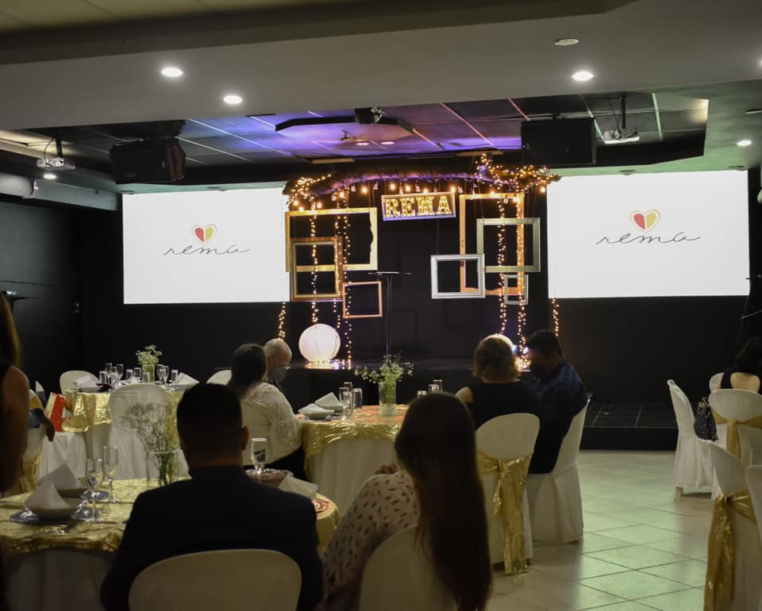

REMA
Nos casamos con buenas intenciones, pero malas instrucciones

REMA es un ministerio de la iglesia Valle de Bendición que se enfoca en la enseñanza y predicación de la Palabra de Dios, con el objetivo de edificar y fortalecer los matrimonios.
Aquí aprenderas los roles que Dios establecio para tener un matrimonio feliz. Es una guía de la idea del Señor sobre el matrimonio, cuales son las tareas de cada uno (esposo y esposa) y algunos consejos de como mantener un matrimonio fuerte y estable.